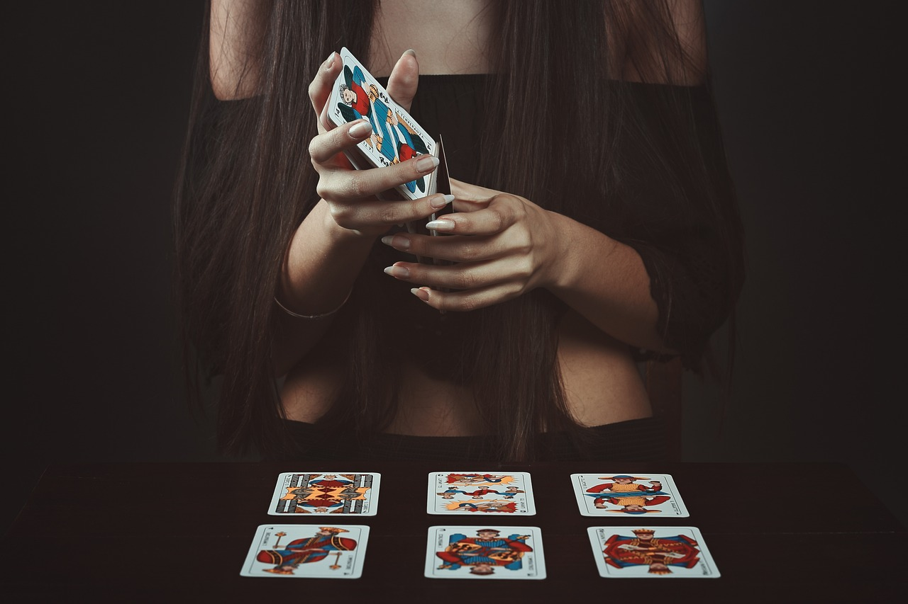
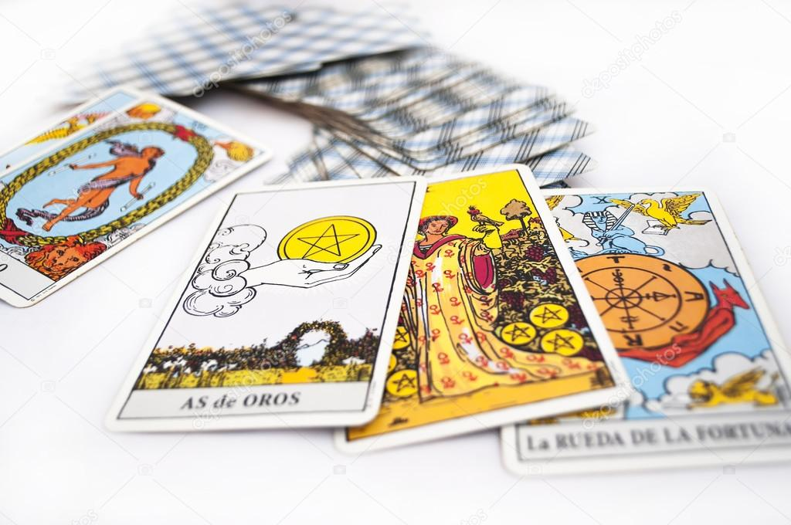

¿Qué es el tarot?

El tarot es una herramienta o método de adivinación, que consiste en utilizar una baraja — compuesta
por un total de 78 cartas si la utilizamos al completo o solo 22 cartas si nos centramos en los arcanos
mayores— para dar respuestas a preguntas, guiar decisiones o prevenir el futuro.
Pero primero hemos de preguntarnos: ¿es aconsejable echarse las cartas una misma o es mejor acudir
a una profesional? Cuando estás en esa fase en la que todavía estás aprendiendo el significado de cada
carta y a echarlas, lo mejor que puedes hacer es acudir a una profesional. Una tarotista te dará una
perspectiva diferente y, además, podrás ver cómo lo hace y aprender de ella (o de él, que también los hay).
Lo más difícil de leer las cartas es construir una interpretación completa y exacta a partir de la
disposición de las cartas sobre la mesa. Echar las cartas del tarot consiste en algo más que en sumar
sus valores o hacerlo de una manera determinada. Aprender a interpretarlas lleva su tiempo y mucha práctica.
También es importante lo que TÚ puedas aportar al proceso, porque no hay dos interpretaciones iguales.
Puedes sentarte y estudiar las cartas todo el tiempo que quieras, tomar notas… Pero en algún momento,
tendrás que combinar sus significados para elaborar una respuesta coherente para la persona que te consulta.
Esta es la razón por la que echar las cartas requiere tanta práctica y constancia.
¿Qué preguntas puedes hacer a las cartas de tarot?

Si eres aficionada al horóscopo y a la ciencia que se esconde tras tu carta astral, seguramente también te
interesen las cartas del tarot. Lo mejor del tarot es que puedes preguntar sobre cualquier cosa. No existe
ninguna limitación en cuanto a los problemas que el tarot puede ayudarnos a resolver y entender, aunque
normalmente se distinguen en cuatro ámbitos: amor, trabajo, dinero y salud. En mi caso, puede que haya una
que, como tarotista, son las únicas cuestiones a las que no respondo: las relacionadas con la salud (creo
que los que mejor pueden contestarlas son los profesionales de la medicina). Las respuestas están ahí fuera
esperándonos, sólo hay que encontrar el camino para acceder a ellas. Como dice Horóscopo Negro en la guía
del tarot de Isa Muguruza, lo que algunos no saben es que el futuro está dentro de nosotros, en nuestra
psique, en nuestro actos, y el tarot es la herramienta que, de algún modo, nos ayuda a captar el momento
antes de que suceda. Así que si quieres recurrir al tarot antes de tomar una decisión importante o
saber qué serie de televisión es la próxima que deberías ver, esto es lo que debes saber.
¿Cuántas cartas del tarot hay?

Lo primero que debemos saber para poder usar el tarot adecuadamente es conocer su composición. Como
bien sabes, estamos hablando de una baraja de cartas. Pero lo que quizá no sabías es que, a diferencia
de los naipes, está compuesta por 78 de ellas.
Por un lado, tenemos los arcanos menores. Son 56 cartas divididas en catorce números (del uno al Rey)
y cuatro palos. Estos son copas, espadas, bastos y oros. Es decir, al menos hasta aquí la baraja es
similar a la española.
Pero luego se añaden otras 22 cartas, conocidas como arcanos mayores. Estas cartas se introdujeron
durante el Renacimiento en el tarot, utilizándose como bases de un juego en el que se emplean alegorías
y metáforas. Con el tiempo, sus significados se tomaron como referencia para desvelar el porvenir del
futuro. De todas ellas hablaremos detenidamente más adelante.
Significado de las cartas del Tarot: los 22 arcanos mayores
En su origen, las cartas del tarot se utilizaban para jugar a las cartas. En medio de este mundo lúdico,
aparecen los arcanos mayores. Cartas que representan conceptos e ideas abstractas, qué tiempo atrás
siguen usándose como herramienta adivinatoria.
La pregunta es… ¿Usamos siempre estas cartas para las tiradas del tarot? Por lo general, los arcanos
mayores se utilizan en tres ocasiones:
- Lecturas generales: durante la lectura general, los arcanos mayores aportan una visión amplia y
profunda de la situación. Representa arquetipos poderosos y aspectos fundamentales de la vida.
- Lecturas específicas: cuando hacemos una tirada sobre un área específica de la vida, los arcanos mayores
nos ofrecen una perspectiva más profunda del asunto. Revelan información esencial que puede orientarnos sobre
los aspectos más relevantes a tener en cuenta.
- Momentos claves: estas cartas también se usan en los momentos cruciales de la vida, para tomar decisiones
importantes, superar transiciones profundas o asumir cambios significativos. Nos ayudan a iluminar todos
los caminos posibles, a analizar las influencias externas y aprender lecciones clave.
En cambio, cuando hacemos lecturas simples o preguntas muy específicas, estas cartas pueden no resultar de
utilidad.
Ahora vamos a repasar rápidamente el significado de cada arcano mayor. Pero recuerda que la interpretación
de cada carta puede variar en función de la tirada y la intuición de quien hace la lectura.